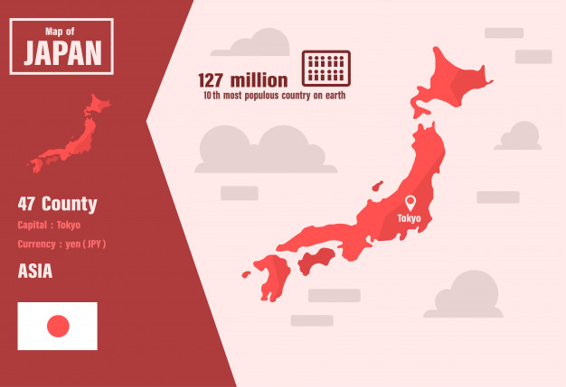

Lo maravilloso que es japon
(日本) es un país insular del este de Asia. Está ubicado entre el océano Pacífico y el mar del Japón, al este de China, Rusia y la península de Corea. Conocido como «La tierra del sol naciente», es una de las mayores potencias económicas del mundo.
Japón está formado por cuatro islas principales: Honshū, Hokkaidō, Kyūshū y Shikoku, que forman el 97% de la superficie total del país, y por otras 6.848 islas menores adyacentes. Tiene una población de 127 millones de personas, la décima más numerosa del mundo. El área metropolitana de Tokio, que incluye a la ciudad capital de Tokio y las prefecturas de sus alrededores, es el área urbana más grande del mundo en términos de población, albergando a más de 30 millones de habitantes. Es el segundo país más poblado de Asia Oriental, después de China.
Las islas de Japón estuvieron habitadas desde el período Paleolítico superior. Las primeras menciones escritas acontecieron de manera breve en libros de historia de China del siglo I. La influencia del mundo exterior seguida de largos períodos de aislamiento ha caracterizado la historia de Japón. Desde que se adoptó una constitución en 1947, la forma de gobierno de Japón ha sido la de una monarquía constitucional, con un emperador y un parlamento elegido, conocido como la Dieta.

Geografia
Japón es un archipiélago estratovolcánico compuesto por 374.744 km² de islas y 3.091 km² de agua y conformado por más de seis mil islas que se extienden a lo largo de la costa asiática este del océano Pacífico y en los archipiélagos de Ryukyu, Izu y Ogasawara. Según el censo de 2005 tiene 127,55 millones de habitantes. El país está ubicado al noreste de China y de Taiwán (separado por el mar de China Oriental), levemente al este de Corea (separado por el mar del Japón) y al sur de Siberia, Rusia. Las cuatro islas principales, de norte a sur, son Hokkaidō, Honshu, Shikoku y Kyushu. La isla de Okinawa (600 km al sudoeste de Kyushu) les sigue en magnitud. Cerca del 73% del país es montañoso, cada isla cuenta con su cadena montañosa. La montaña más alta es el Monte Fuji (Fujisan), de 3.776 m de altura y le sigue Kitadake, con 3.193 m de altura. Debido a que existe tan poco terreno llano en Japón, muchas colinas y laderas son aprovechadas en su totalidad para el cultivo. Como se encuentra situada en una zona de mucha actividad volcánica resultan frecuentes temblores de pequeña magnitud y actividad volcánica ocasional para los que el país está altamente preparado.

Clima
Hojas de otoño (Momiji) en Kongōbu-ji, Monte Koya. Declarado Patrimonio de la Humanidad.
Es un país lluvioso y con una alta humedad, posee un clima templado con 4 estaciones diferentes bien definidas, gracias a la distancia a la que se encuentra respecto del ecuador. De todas formas el clima del norte es ligeramente frío templado (Hokkaidō) con fuertes veranos y grandes nevadas en invierno, el centro del país es caliente, veranos húmedos e inviernos cortos y en el sur ligeramente subtropical (Kyūshū) con veranos largos, calientes y húmedos e inviernos cortos y suaves. El clima a veces es afectado por los vientos estacionales producidos por los centros ciclónicos y anticiclónicos que se forman en el continente y en el Pacífico (anticiclón o ciclón hawaiano), generando vientos desde el continente hacia el Pacífico en invierno y del Pacífico al continente en verano.
Existen dos factores primarios en la influencia climatológica: la cercanía con el continente asiático y las corrientes oceánicas. El clima desde junio a septiembre es caliente y húmedo por las corrientes de viento tropicales que llegan desde el océano Pacífico y desde el sudeste asiático. Estas corrientes precipitan grandes cantidades de agua al tocar tierra, por lo que el verano es una época de importantes lluvias, que comienzan a principios de junio y duran alrededor de un mes. Le sigue una época de calor y a principios de agosto hasta principios de septiembre, un periodo de tifones, en la cual pasan por Japón 5 ó 6 de ellos y llegan a producir daños significativos. La precipitación anual de lluvias es de 100 a 200 centímetros, pero entre el 70 y el 80 por ciento de éstas están concentradas en junio y septiembre.
En invierno, los centros de alta presión del área siberiana y los centros de baja presión del norte del océano Pacífico, generan vientos fríos que atraviesan Japón de oeste a este, produciendo, importantes nevadas en la costa japonesa del mar del Japón. Como los vientos chocan contra las cadenas montañosas del centro, las grandes alturas terminan por precipitar la humedad de estos vientos en forma de nieve y al pasar por la costa pacífica del país llegan sin portar notables cantidades de humedad, por lo que no son el factor principal de nevadas en la costa pacífica. Además esto provoca que en esta costa, el tiempo en invierno sea seco y de días sin nubes, al contrario del invierno en la costa oeste.
Hay dos corrientes oceánicas que afectan al modelo climático: la corriente cálida de Kuroshio y la corriente fría de Oyashio. La corriente de Kuroshio fluye por el Pacífico desde Taiwán y pasa por Japón bastante al norte de Tokio, es una corriente que lleva mucho calor a la costa este.

Fauna y flora
La fauna comprende 132 especies de mamíferos, 583 especies de aves y 66 especies de reptiles, batracios y peces. Aún quedan osos negros y pardos, zorros y ciervos. El único primate es el simio de cara roja (el macaco de Japón) que puebla todo el territorio de Honshu.
La gran variedad de la vegetación japonesa (unas 17.000 especies) se debe al clima y al relieve. Los bosques cubren el 67% de la superficie del país y se componen en su mayoría de árboles frondosos y coníferas: castaños, hayas, arces, tuyas, pinos rojos y laricios, junto con abedules y fresnos. Al oeste domina un bosque de coníferas que crecen junto a bambúes, magnolios y castaños verdes. Los ciruelos blancos y rojos, los cerezos de floración temprana, así como el bambú y los pinos se han convertido en símbolos tradicionales del país.

Demografia
Japón sufre en la actualidad de un descenso en su índice de natalidad (1,3 hijos por mujer), causado entre otras razones por el elevado coste de criar y educar a un hijo. Si a lo anterior se le añade el hecho de que posee el tercer puesto en la población más longeva del mundo (82,07 años), la combinación de menos nacimientos con decesos más tardíos, hace temer por la viabilidad de su sistema de pensiones y la disponibilidad en el futuro de mano de obra suficiente. En 2005 por primera vez el número de japoneses decreció, pues se registraron menos nacimientos que decesos.
Shoshika es una palabra de reciente acuñación (años 1990), cuya traducción podría ser «disminución en el número de niños» y que en la actualidad es utilizada para referirse esta carencia de infantes cada vez mayor en la sociedad japonesa.
En respuesta a este problema, el gobierno ha elevado la edad de jubilación, pero se prevé para las próximas décadas la continuidad de esta declinación de la población. Además, en 1999 reforzó las leyes contra la discriminación de las mujeres en el trabajo. A su vez, lanzó tres proyectos: Plan Ángel, Nuevo Plan Ángel y Una Propuesta Más, todos ellos orientados a facilitar que las mujeres puedan trabajar y ser madres a la vez. Pero estas medidas chocan con la fuerte tradición que rige la sociedad japonesa.
Como medida complementaria, las empresas solicitan que se bajen las barreras inmigratorias, para permitir la entrada de mano de obra no cualificada. Este proyecto está fuertemente cuestionado, porque terminaría con la homogeneidad social, provocando inevitables roces sociales. Como plan a largo plazo, las compañías invierten grandes sumas de dinero en investigación y desarrollo de robótica. Actualmente, Japón posee 410.000 de los 720.000 robots industriales en todo el mundo.

Cultura
La cultura japonesa ha evolucionado de manera considerable en los últimos años, desde el país original de la cultura Jōmon a su cultura contemporánea, que combina las influencias de Asia, Europa y Estados Unidos. Las artes tradicionales incluyen la artesanía (ikebana, origami, ukiyo-e, muñecos, lacas, alfarería), actuaciones (bunraku, Kabuki, Noh, rakugo), tradiciones (ceremonia del té, Budō, la arquitectura, los jardines, las espadas) y cocina.
La fusión entre la impresión tradicional en madera y el arte occidental condujo a la creación del manga, un formato japonés de Historieta popular dentro y fuera de Japón. El manga ha influido la animación para la televisión y el cine dando origen al anime y el llamado live action movie, normalmente filmes o teleseries encarnadas por actores y basados en series de animación populares. Las consolas de videojuegos japonesas han prosperado desde el decenio de 1980.
La música de Japón es ecléctica, después de haber tomado prestados los instrumentos, las escalas y estilos de las culturas vecinas. Instrumentos, como el koto, se introdujeron durante los siglos IX y X. El recitativo acompañado del teatro Nō fechan del siglo XIV y la música folclórica popular, con la guitarra shamisen, desde el XVI. La música occidental, presente desde finales del siglo XIX, ahora forma parte integrante de la cultura japonesa. Después de la Segunda guerra mundial, Japón ha sido influido por la música moderna de estadounidenses y europeos, lo que ha dado lugar al J-Pop.
El karaoke es la actividad cultural más ampliamente practicada. En noviembre de 1993, un estudio realizado por la Agencia de Asuntos Culturales encontró que ese año, eran más los japoneses que habían cantado karaoke, que los que habían participado en manifestaciones culturales tradicionales, tales como arreglos florales o la ceremonia del té.
Las primeras obras de la literatura japonesa incluyen Kojiki y Nihonshoki, dos libros de historia y el Man’yōshū, un libro de poemas del siglo VIII, todos escritos en caracteres chinos. En los primeros días de la era Heian, el sistema de transcripción conocido como kana (Hiragana y Katakana) fue creado como fonogramas. Kaguya es considerada la más antigua descripción en japonés. Makura no Sōshi, una reseña de la vida en la corte de Heian, es un libro escrito por Sei Shōnagon, mientras que Genji Monogatari de Murasaki Shikibu es a menudo descrito como la primera novela del mundo. La era Meiji, durante el cual la literatura japonesa integró influencias occidentales, vio el declive de las formas literarias tradicionales. La obra que marcó definitivamente el modelo literario de la literatura japonesa moderna fue Shōsetsu Shinzui (La esencia de la novela, 1885) de Tsubouchi Shōyō. Su díscipulo Futabatei Shimei es considerado como el creador de novela japonesa moderna.95 Otros autores importantes de la misma época fueron Mori Ōgai, Higuchi Ichiyō, Ishikawa Takuboku, Masaoka Shiki y, el que quizá sea el más conocido de este período, Natsume Sōseki. Posteriormente destacaron Akutagawa Ryūnosuke, Tanizaki Jun’ichirō, Yasunari Kawabata, Yukio Mishima y, más recientemente, Haruki Murakami. Cuenta además con dos premios Nobel, los autores Yasunari Kawabata (1968) y Kenzaburo Oe (1994).

Religion
Los japoneses incorporan los rasgos de muchas religiones en sus vidas diarias en un proceso conocido como sincretismo. Las calles japonesas se decoran en las fiestas de Tanabata, Obon, Halloween y Navidad. Una oración popular cuando se tienen problemas es «Kami-sama, Hotoke-sama, dōka otasuke kudasai.» (‘Dios y Buda, ayudadme de alguna forma, por favor’), que parece implicar una creencia sincretista. Muchas personas, sobre todo aquellas pertenecientes a generaciones jóvenes, sienten que las religiones son parte de la cultura tradicional.
El budismo es la religión mayoritaria; el sintoísmo fue religión oficial del país hasta el siglo VII y actualmente es la segunda religión en número de seguidores. Debido a la influencia histórica de China, también hay confucianos, taoístas, etc. También se practica el cristianismo, principalmente en sus formas de protestantismo y catolicismo, aunque es una religión minoritaria.
Además de sus religiones, las supersticiones japonesas están bastante extendidas en Japón y son utilizadas para enseñar lecciones prácticas sobre diferentes aspectos de la vida.

Deportes
Tradicionalmente, se considera al estilo de lucha sumo como el deporte nacional ya que es uno de los más populares deportes entre los espectadores. Las Artes marciales como el judo, el kendō y el karate también son ampliamente practicados y gozan de un considerable número de espectadores en el país. Después de la Restauración Meiji, muchos deportes occidentales fueron introducidos y empezaron a propagarse en el sistema educativo.97 La Liga Japonesa de Béisbol Profesional fue establecida en 1936 y hoy en día es el deporte más popular del país. En el 2006 obtuvo el primer campeonato de béisbol, el Clásico Mundial de Béisbol, volviendo a ganar el clásico también en 2009 contra Corea en una apretada final, que se extendió a Extra innings.
Desde el establecimiento de la Liga de Fútbol Profesional en 1992, la asociación de fútbol también ha adquirido numerosos seguidores. Además fue sede la Copa Intercontinental entre 1981 y 2004 y co-anfitrión de la Copa Mundial de Fútbol 2002 junto a Corea del Sur. La Selección de fútbol de Japón es también uno de los mejores equipos de fútbol en Asia, ganando la Copa Asiática en cuatro ocasiones.
El golf es también popular, al igual que el automovilismo y la Fórmula Nippon. En 1997 se completó por parte de Honda el Twin Ring Motegi con el fin de llevar la IndyCar Series a Japón, además la Fórmula 1 viaja frecuentemente a Japón para el Gran Premio que se celebra en ese país, generalmente en Suzuka, pero también ha pasado por Fuji, también el mundial de motociclismo de la FIM liderado por MotoGP hace su incursión para el Gran Premio del Pacífico en el Twin Ring Motegi, frecuentemente también iba a Suzuka, pero luego de la muerte del piloto japonés Daijiro Kato en 2003 la categoría dejó de participar allí.
La mejor participación de Japón en los Juegos Olímpicos fue en 2004 cuando obtuvo 37 medallas. En los Juegos Olímpicos de Pekín 2008 también tuvo una destacada actuación con nueve oros, seis platas y diez bronces, siendo finalmente octava en el medallero sólo por detrás de China, Estados Unidos, Rusia, Reino Unido, Alemania, Australia y Corea del Sur. Además, Japón acogió los Juegos Asiáticos de 1958 y de 1994.

Sociedad
Los jóvenes han sufrido una intensa revolución fruto de la presión de la escuela, familia, y el código de educación, muy estricto. Así, algunos imitan a los jóvenes de cultura occidental y su aspecto intenta ser similar al manga y al anime. No obstante, la influencia de la cultura occidental entre la juventud japonesa ha venido decreciendo de forma sostenida desde mediados de los años 1990.
Las personas ancianas son muy tradicionales y siguen normalmente el código de conducta que se basa en el respeto a la familia y al trabajo. Estas son algunas de las razones que han llevado a tal revolución juvenil. Sin embargo, es importante destacar que la tal llamada revolución sólo afecta al 5-10% de la juventud, ya que el resto respeta y admira la cultura tradicional.
Es uno de los países industrializados donde aún se mantiene la pena de muerte. De hecho, se ha revivido la aplicación de la pena capital en Japón; en 2007 se ejecutaron por ahorcamiento a 9 personas, y a 15 en 2008.

Gastronomia
La gastronomía de Japón como cocina nacional ha evolucionado en los siglos a causa de muchos cambios políticos y sociales. En la Edad Antigua la mayoría de la cocina estaba influenciada por la cultura china. La cocina cambió con el advenimiento de la Edad Media, que marcó el comienzo de un abandono del elitismo con la normativa del shogunato. Al principio de la Edad Moderna ocurrieron grandes cambios que introdujeron en Japón la cultura occidental.
El término moderno «comida japonesa» (nihon ryōri, 日本料理) o washoku (和食, washoku) se refiere a dicha comida al estilo tradicional, similar a la que existía antes del final del aislamiento nacional de 1868. En un sentido más amplio de la palabra, podrían incluirse también alimentos cuyos ingredientes o modos de cocinarlos fueron introducidos, posteriormente, del extranjero, pero han sido desarrollados por japoneses que los han hecho suyos. La comida japonesa es conocida por su énfasis en la estacionalidad de los alimentos (旬, shun), calidad y presentación de sus ingredientes.
Hay muchas opiniones sobre qué es fundamental en la cocina japonesa. Muchos piensan que el sushi o las comidas elegantes estilizadas del formal kaiseki se originaron como parte de la ceremonia del té. Muchos japoneses, sin embargo, piensan en la comida cotidiana de la gente japonesa —en especial la que existió antes del final de la Era Meiji (1868 – 1912) o antes de la Segunda Guerra Mundial. Pocos japoneses urbanos modernos conocen su gastronomía tradicional.